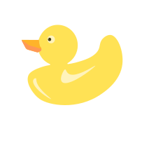
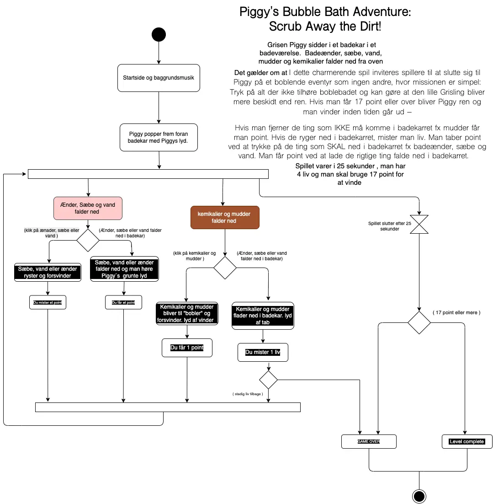
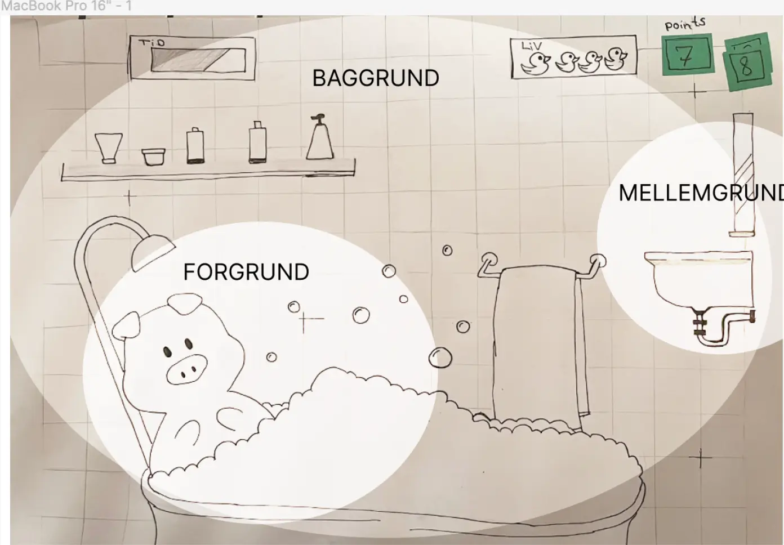
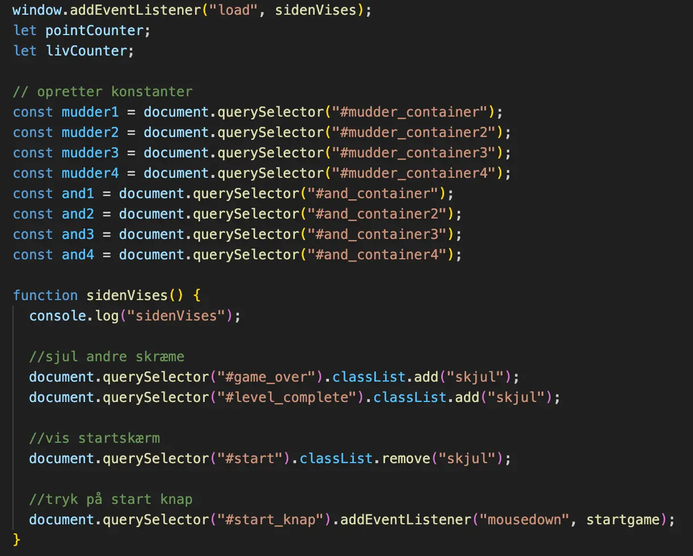
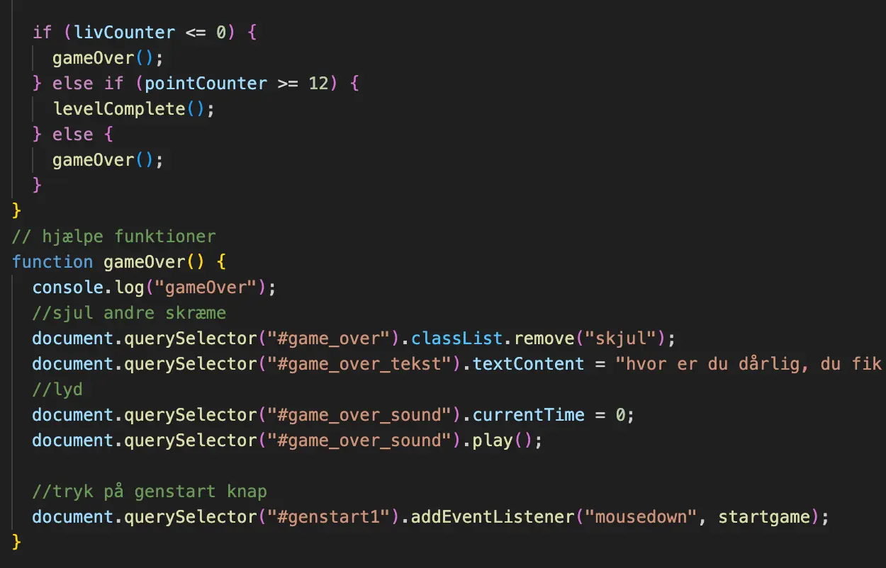

-
Introduktion til programmeringssproget JavaScript:
Dette omfatter grundlæggende syntaks og koncepter i JavaScript, såsom variabler, betingelser, løkker og funktioner. Anvendelse af JavaScript sammen med CSS-animationer til at udvikle et spil: Dette indebærer integration af JavaScript-kode med CSS-animationer for at skabe interaktivitet og dynamik i spillet.
Analyse af spildesign og brugerengagement: Dette indebærer en undersøgelse af, hvordan spil designes for at engagere og fastholde brugere. Dette kan omfatte elementer som spilmekanik, narrative, sværhedsgrad og brugeroplevelse.
GRUNDLÆGGENDE ANIMATION
-
Multimedieproduktion | palnlægning
Frontend-udvikling og -design | prosess
Brugertest | Test af spil og feedback
Design af brugeroplevelser | intertaktivt spil
Organisering, produktion og præsentation af indhold | det færdige resultat
Tekst-layout | Spil forklaringer
-
Adobe Illustrator til grafisk design.
Tegneredskaber og skitsebog til skitsering.
HTML, CSS og JavaScript til kodning af spillet.
Aktivitets- og statemachine-diagrammer til planlægning.
Brugertestværktøjer til at evaluere brugeroplevelsen.
I Animations Temaet, brugte jeg de færdigheder, jeg havde lært om
JavaScript og CSS-animationer
til
at udvikle mit eget
spil.
Det var en spændende udfordring at integrere disse teknologier for at skabe en dynamisk og
interaktiv
spiloplevelse.
Det sværeste var at kode JavaScript men også aktivitetsdiagrammet.
Det krævede en dybdegående
forståelse af, hvad der
bringer et spil til live,
og hvordan man kan implementere interaktive principper i mit eget
spil.
Processen, som jeg
gennemgik, involverede en omhyggelig vurdering af spillets mekanik, sværhedsgrad og brugeroplevelse
for at sikre, at det
ville være sjovt og engagerende for spillerne. Dog medhensyn til mig selv om begynder.
I Temaet skulle jeg selv fremstille de grafiske elementer ved brug af værktøjer
som Adobe
Illustrator til at skabe høj
kvalitet grafik.
Jeg tog disse færdigheder fra sidste Tema med mig og anvendte dem til at
designe
grafikken til mit
spil.
Det var fascinerende at se mine designs tage form på skærmen og bidrage til at skabe en
visuelt spilleoplevelse.
I processen arbejdede jeg også med aktivitets- og statemachine-diagrammer til at planlægge
interaktive flow og definere,
hvordan spilleren ville interagere med mit spil.
Dette hjalp mig med at visualisere og planlægge
komplekse interaktive
funktioner og sikre, at spillet ville fungere problemfrit. Der var mange forhindringer hen ad vejen
med funktionerne i
JavaScript, som jeg heldigvis fik løst.
-
Spil elementer i Illustrator

skitser
Spil diagrammer

JavaScript
